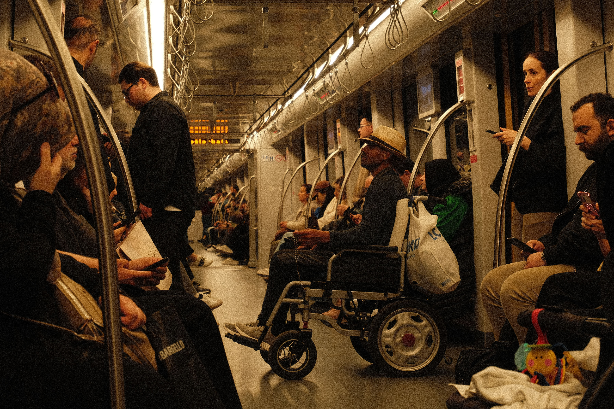

Make the next journey easier.
Help passengers and caregivers work through the details of accessible travel, with clear questions and practical arrangements.
ABOUT KINDRIDE
More than a destination. A familiar routine, a day with family, or an appointment that matters. Your preferences belong at the center of the plan.
WHY WE EXIST
Getting out should begin with possibility. Kindride brings the practical questions about accessible travel into one clear conversation: where you’re going, how you board, and what support you prefer.
Our starting point is simple: listen to the passenger. A wheelchair type alone cannot describe someone’s needs, and a caregiver’s help should always leave room for the passenger’s own voice.
Explore appointment-day planning
WHAT GUIDES US
These principles guide the conversation before each journey.
Help passengers and caregivers work through the details of accessible travel, with clear questions and practical arrangements.
Support a future where mobility needs are considered from the start, and people have more choice in how they get out and about.
Respect each passenger’s independence. Discuss assistance, companions, timing, and boarding.
PEOPLE BEHIND THE JOURNEY
Know who to speak with about your arrangements and who will help on the day.
The coordinator discusses pickup, destination, passenger numbers, and return arrangements. Keep a contact number ready for changes.
Talk with the driver about the assistance you prefer. Ask the provider to explain their equipment checks and wheelchair-securement training.
Passengers and caregivers share the information that helps the journey. Agree who receives updates while keeping the passenger involved.
CONFIDENCE STARTS WITH CLARITY
A photograph or a conversation is only the beginning. Confirm the details that matter to your journey directly with the transportation provider.
Call to discuss your journeyConfirm device dimensions, weight limits, ramp or lift requirements, securement compatibility, companion seating, and luggage space.
Ask about training in accessible boarding and wheelchair securement. Explain the assistance you prefer and discuss any limits before agreeing the ride.
Request current licensing and insurance information. Confirm the fare, waiting charges, cancellation terms, and return arrangements before booking.
THE DETAILS PEOPLE VALUE
Being able to discuss my boarding needs ahead of time made planning a day out feel much easier.

I liked having a clear conversation about my mother’s appointment, her wheelchair, and the return trip.

Checking the vehicle and space for my companion helped me feel prepared for the journey.

OUR LOCAL AREA
Start with your pickup and destination in the Portland area. Ask the provider to confirm service boundaries, travel distance, accessibility requirements, and availability for your own route.
For appointments outside the local area or a repeated schedule, discuss the complete outbound and return arrangement before agreeing the ride.
Discuss your route and coverageLET’S TALK ABOUT YOUR NEXT JOURNEY